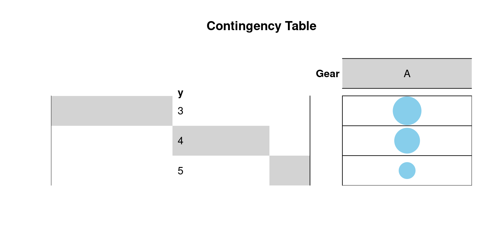
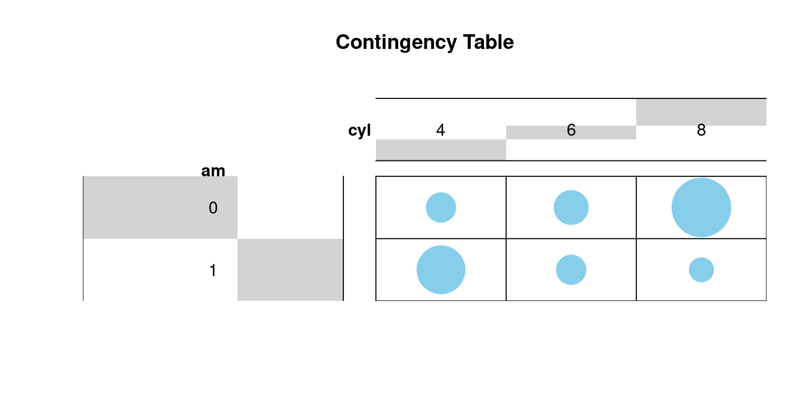

# Load the mtcars dataset
data(mtcars)
# Create a table to count the number of cars in each gear category
gear_counts <- table(mtcars$gear)
gear_counts
3 4 5
15 12 5 
January 22, 2024.
| Test | Use |
|---|---|
| A. Goodness-of-fit test | determine if a sample of data fits a specified distribution |
| B. Independence test | determine if there is a relationship between two categorical variables |
The Chi-Square Goodness-of-Fit test is a statistical tool used to determine if the observed data in a categorical dataset aligns with the expected data based on a particular hypothesis or anticipated distribution. It helps researchers evaluate if there exists a noteworthy difference between the actual data and what would be anticipated under a specific theoretical model or hypothesis.
Here are the essential steps and concepts involved in carrying out a Chi-Square Goodness-of-Fit test:
Determine the Chi-Square statistic using this formula:
χ² = Σ ((O - E)² / E)
In summary, the Chi-Square Goodness-of-Fit test serves to evaluate whether categorical data conforms to a particular theoretical distribution. It helps us assess whether any deviations from the expected distribution are statistically meaningful or simply due to chance.
Business Scenario
We work for an e-commerce company that sells electronic gadgets, and we want to determine whether the distribution of the company’s most popular product categories among customers follows the expected distribution based on market research conducted last year. The expected distribution from the research is as follows:
We want to test whether the observed distribution of product categories sold in a recent month matches the expected distribution.
Simulated Observed Data
In the recent month, we collected sales data, and we found the following distribution of product categories sold:
Chi-Square Goodness-of-Fit Test
Step 1: Set up Hypotheses
Step 2: Organize Data
Step 3: Calculate Expected Frequencies
Step 4: Calculate the Chi-Square Statistic
Step 5: Determine Degrees of Freedom (df)
Step 6: Set Significance Level
Step 7: Find Critical Value
Step 8: Compare Statistic to Critical Value
Step 9: Make a Decision
Step 10: Interpretation
1. Data Preparation
We start with the mtcars dataset, which contains information about 32 cars, each categorized with 3, 4, or 5 gears.
# Load the mtcars dataset
data(mtcars)
# Create a table to count the number of cars in each gear category
gear_counts <- table(mtcars$gear)
gear_counts
3 4 5
15 12 5 2. Visualization of Contingency Table
We visualize the contingency table using a graphical balloon plot:
# Load the gplots library for graphical plotting
library("gplots")
Attaching package: 'gplots'The following object is masked from 'package:stats':
lowess# Convert gear counts into a table format
gear_table <- as.table(as.matrix(gear_counts))
# Create a graphical balloon plot
balloonplot(t(gear_table), main="Contingency Table",
xlab="Gear",
label=FALSE, show.margins=FALSE)
3. Calculation of Proportions
We calculate the proportions of cars in each gear category:
# Calculate proportions of cars in each gear category
gear_proportions <- prop.table(gear_counts)
gear_proportions
3 4 5
0.46875 0.37500 0.15625 4. Running the Chi-Square Goodness-of-Fit Test
We specify the expected probabilities for each gear category and perform the chi-square goodness-of-fit test:
# Specify the expected probabilities for each gear category
expected_probs <- c(0.5, 0.3, 0.2)
# Perform the chi-square goodness-of-fit test using observed proportions and expected probabilities
chisq_test_result <- chisq.test(gear_proportions, p=expected_probs)
chisq_test_result
Chi-squared test for given probabilities
data: gear_proportions
X-squared = 0.030273, df = 2, p-value = 0.9855. Interpretation
After running the chi-square goodness-of-fit test using the provided expected probabilities, the output provides important information:
Chi-squared test for given probabilities: This line indicates that the test conducted is specifically a chi-square goodness-of-fit test. It’s designed to assess whether the observed data fits the expected probabilities we’ve provided.
data: gear_proportions: This line specifies the dataset used for the test, which is the gear_proportions dataset. This dataset contains the observed proportions of cars in different gear categories.
X-squared = 0.030273: This value represents the chi-square statistic (X²), which is a measure of how closely the observed proportions align with the expected probabilities. In this case, the calculated chi-square statistic is approximately 0.030273.
df = 2: This indicates the degrees of freedom (df) associated with the chi-square distribution. In a goodness-of-fit test like this one, the df is calculated as one less than the number of categories being analyzed. Here, since there are three gear categories (3, 4, and 5), df equals 2.
p-value = 0.985: The p-value is a crucial result of the test. It represents the probability of observing a chi-square statistic as extreme as the calculated value (0.030273) under the assumption that there is no significant difference between the observed and expected proportions. In this case, the high p-value of 0.985 suggests that the observed data aligns well with the expected probabilities. A high p-value implies that there is no strong evidence to reject the null hypothesis, which means that the data does not provide significant grounds to believe that the observed proportions are different from what was expected.
In summary, this output tells us that the chi-square goodness-of-fit test was conducted using the observed proportions of cars in different gear categories and the specified expected probabilities. The resulting high p-value (0.985) indicates that there is no strong reason to conclude that the observed proportions significantly differ from the expected probabilities, thus failing to reject the null hypothesis.
Certainly, here’s a concise comparison of the Chi-Square Goodness of Fit test and the Z-test for Proportions:
The Chi-Square Goodness of Fit test is employed to assess whether observed data conforms to an expected distribution, particularly when dealing with categorical data. It evaluates the similarity between observed and expected frequencies across different categories, typically through a chi-square statistic and follows a chi-square distribution.
The Chi-Square Goodness of Fit test is used when you have categories or groups, and it helps determine if the observed data matches an expected distribution within those categories. It’s like checking if things are divided as you’d expect.
In contrast, the Z-test for Proportions focuses on comparing a sample proportion with a known population proportion, typically in binary data scenarios. It uses a Z-score to measure the difference and follows a standard normal distribution.
The Z-test helps you assess if the proportion of “yes” responses in your sample significantly differs from a known or expected proportion. It’s like comparing one group to a known standard.
data(mtcars)
mtcars$cyl <- as.factor(mtcars$cyl)
mtcars$am <- as.factor(mtcars$am)
mtcars$gear <- as.factor(mtcars$gear)ctab <- table(mtcars$am, mtcars$cyl)
ctab
4 6 8
0 3 4 12
1 8 3 2library("gplots")
# 1. convert the data as a table
dt <- as.table(as.matrix(ctab))
# 2. Graph
balloonplot(t(dt), main ="Contingency Table",
xlab ="cyl", ylab="am",
label = FALSE, show.margins = FALSE)
chisq.test() as follow:chisq <- chisq.test(ctab)Warning in chisq.test(ctab): Chi-squared approximation may be incorrectchisq
Pearson's Chi-squared test
data: ctab
X-squared = 8.7407, df = 2, p-value = 0.01265In our example, the row and the column variables are statistically significantly associated (p-value = 0.01265).
The observed and the expected counts can be extracted from the result of the test as follows:
# Observed counts
chisq$observed
4 6 8
0 3 4 12
1 8 3 2# Expected counts
round(chisq$expected, 2)
4 6 8
0 6.53 4.16 8.31
1 4.47 2.84 5.69round(chisq$residuals, 3)
4 6 8
0 -1.382 -0.077 1.279
1 1.670 0.093 -1.546##References
[1] Agresti, A. (2002). Categorical data analysis (2nd ed.). Wiley.
Hair Jr, J. F., Black, W. C., Babin, B. J., & Anderson, R. E. (2010). Multivariate data analysis: A global perspective (7th ed.). Pearson Education.
Everitt, B. S. (1992). The analysis of contingency tables (2nd ed.). Chapman and Hall.